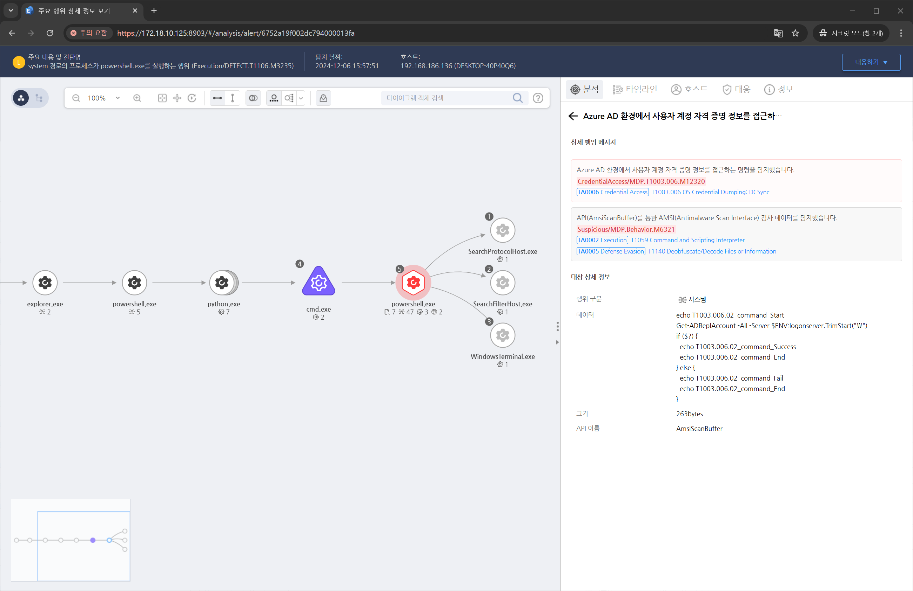

MITRE ATT&CK 액션을 기준으로 대응 방안을 작성
Action = "AMSISCAN" AND CurrntProcess = "powershell.exe" AND AMSISCANDATA = "Get-ADReplAccount" AND AMSISCANDATA = "-All" AND AMSISCAN_DATA = "Server"

LSASS 프로세스 메모리 접근 시도를 탐지하려면 Windows 이벤트 로그를 모니터링합니다.
PowerShell 스크립트를 사용한 자격 증명 추출 시도를 감지합니다.
LSASS 메모리 덤프와 관련된 파일을 탐지합니다. 예를 들어 .dmp 파일이 비정상적인 경로에 저장되는지 확인합니다.
Mimikatz와 같은 도구로 인해 생성된 흔적을 탐지합니다:
LSASS(Local Security Authority Subsystem Service) 프로세스는 Windows 자격 증명을 저장합니다. 공격자들이 LSASS 메모리를 덤프하거나 읽는 것을 방지해야 합니다.
관리자가 아닌 계정에 LSASS 접근 권한을 제한합니다, 관리 계정을 보호하고 이중 인증(MFA)을 활성화합니다.
Windows Defender ATP(Advanced Threat Protection) 또는 Microsoft Defender를 사용하여 메모리 관련 악성 활동을 탐지합니다.
Windows 보안 업데이트를 정기적으로 적용하여 자격 증명 관련 취약점을 제거합니다.
Action 실행시 함께 영향을 받는 다른 Techniqes
| ATT&CK |
|---|
| T1003.006 |
| D3FEND |
|---|
| D3-CCSA Credential Compromise Scope Analysis |